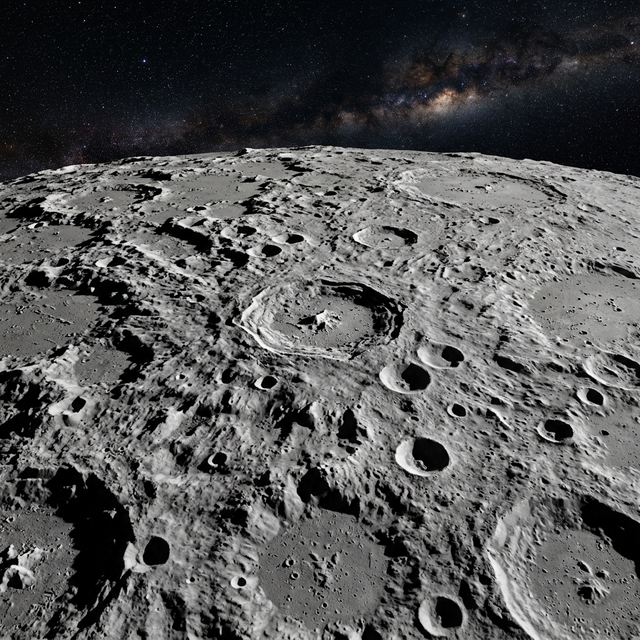

Mercury
The Swift Messenger – Closest to the Sun
Mercury is the smallest planet in the Solar System and the one closest to the Sun. Despite being closest to the Sun, it is not the hottest planet — that title belongs to Venus. Mercury has no atmosphere to retain heat, so temperatures swing wildly from 430°C in the day down to -180°C at night. Its surface is heavily cratered, resembling our Moon.
| Property | Value |
|---|---|
| Diameter | 4,879 km |
| Distance from Sun | 57.9 million km |
| Orbital Period | 88 Earth days |
| Day Length | 59 Earth days |
| Surface Temp. | -180°C to 430°C |
| Moons | 0 |
| Type | Terrestrial (Rocky) |
Fascinating Facts
- 🌑 Mercury is the smallest planet in the Solar System — only slightly larger than Earth's Moon.
- ☀️ A year on Mercury is just 88 Earth days — the shortest year of any planet.
- 🌡️ Despite being closest to the Sun, Venus is hotter because Mercury has no atmosphere.
- 💫 Mercury's surface is littered with craters, cliffs, and ridges from ancient impacts and cooling.
- 🚀 Only two spacecraft have visited Mercury: Mariner 10 in 1974 and MESSENGER in 2004.